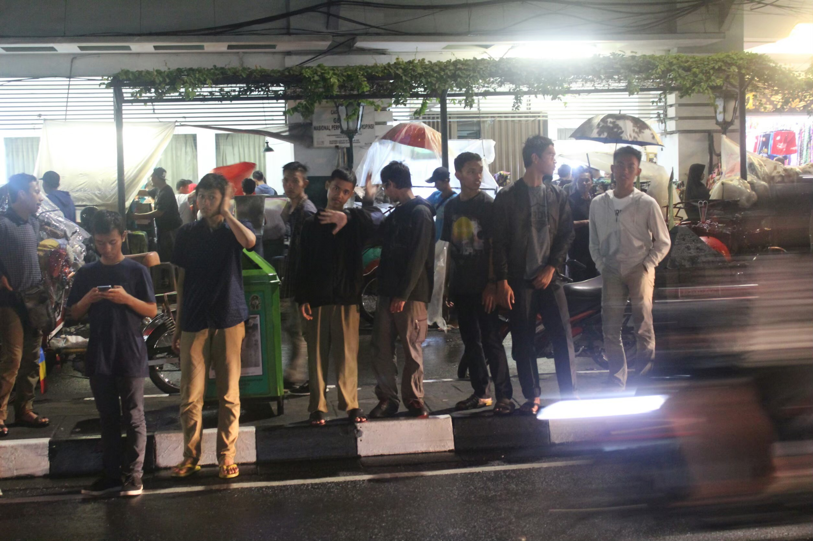
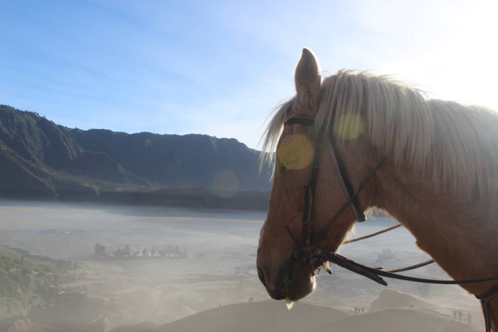

About Me
Photo of me:

src : pribadi
BIODATA
Nama : Sulis Avandhy Putra
NRP : 05211940000084
Tempat Lahir : Padang
Tanggal Lahir : 30 Agustus 2001
Asal : Serang, Banten
Hobi : Membaca, Main game
TUGAS PWEB
Di bawah ini terdapat beberapa tugas sebelumnya
MALIOBORO
Desember 2017

src : pribadi
Foto di atas diambil ketika saya pertama kali mengunjungi kota Yogyakarta. Kesempatan pertama saya lakukan dengan teman - teman saya. Saya menemukan banyak hla baru dan berbeda dengan kota asal saya. Jika berkesempatan lagi, saya ingin kembali ke Yogyakarta untuk menikmati kotanya lagi.
Bromo
Juli 2018

src : pribadi
Foto di atas merupakan foto ketika saya mengunjungi Bromo pada 2018 yang lalu. Kuda yang biasanya membawa turis di bromo menjadi daya tarik tersendiri. Bromo memang memiliki pesonanya sendiri bagi para pemeluknya.